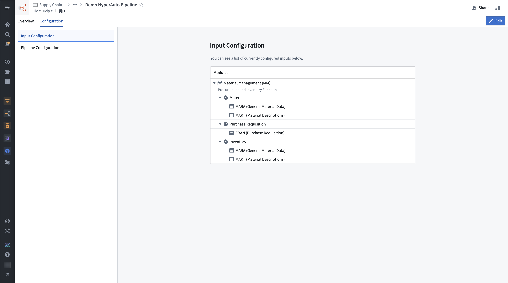
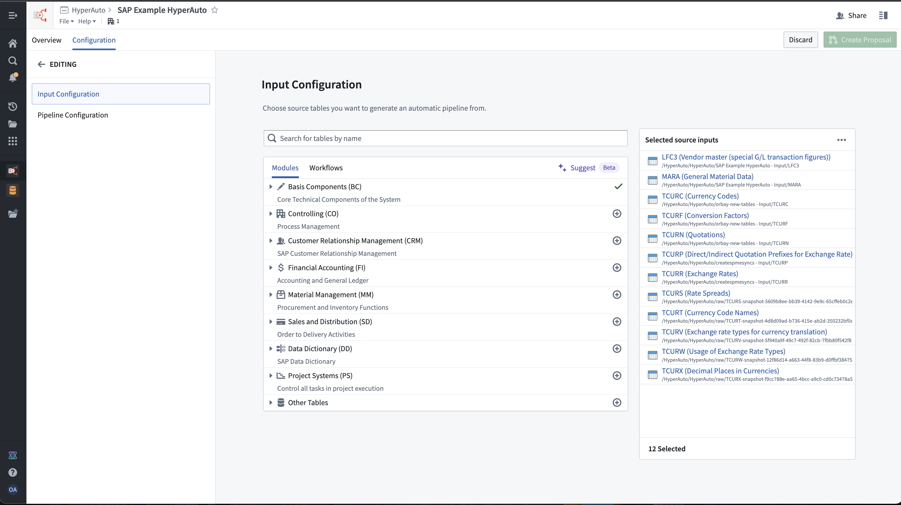
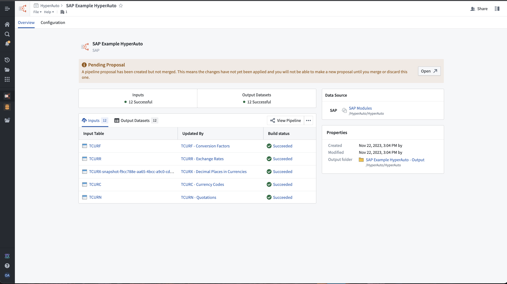
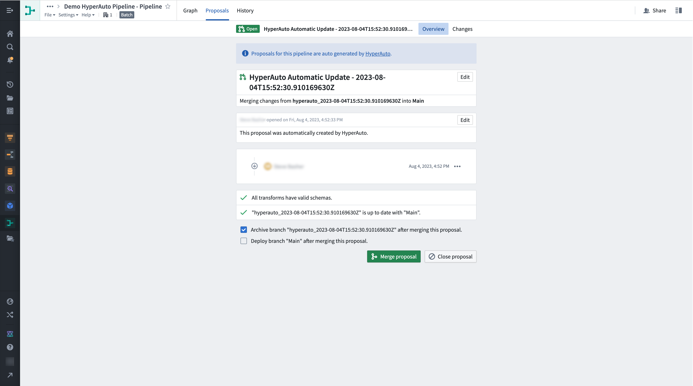
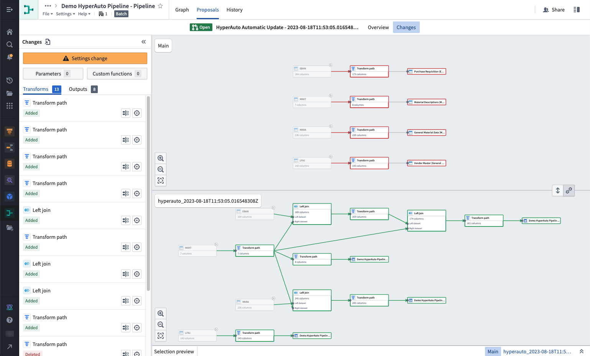

To make edits to a HyperAuto pipeline, users will need to create a proposal. One proposal can exist on a HyperAuto pipeline at a time and represents a staged regeneration of the resources and transformation logic owned by that pipeline.
Users must decide to either approve and apply the proposal or discard it.
To create a proposal, open the Configuration tab of an existing HyperAuto pipeline and select Edit.

Within edit mode, both the input configuration (adding or removing source tables as inputs) and pipeline configuration can be updated within a single edit.

Once satisfied with the changes, select Create proposal to obtain a proposal that is ready and linked for you to evaluate and approve.

Select View proposal from the overview page to open the proposal within Pipeline Builder. This is the page where you can merge or close a proposal. Actions taken will be reflected back on the corresponding HyperAuto pipeline page.

To view the pipeline logic changes that have been generated by the proposal, select the Changes tab.

After reviewing the changes, select Merge proposal to commit the change to the main branch of the pipeline. Ensure you have selected Deploy the branch "Main" after merging the proposal. This will ensure that the pipeline is deployed and the changes are manifested in the output datasets and Ontology.